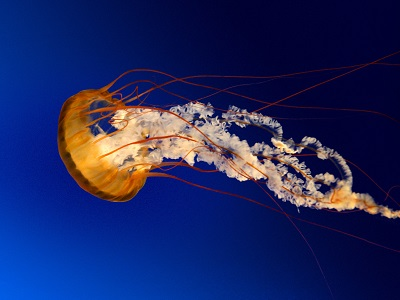
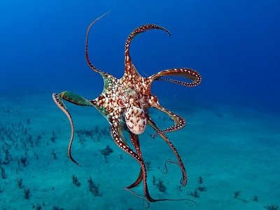

Меду́за, или медузоидное поколе́ние (греч. μέδουσα) — фаза жизненного цикла стрекающих из подтипа Medusozoa: гидроидных (Hydrozoa), сцифоидных (Scyphozoa) и кубомедуз (Cubozoa). Тело медуз в значительной части состоит из обводнённой соединительной ткани — мезоглеи — и по форме напоминает колокол или зонтик. Такое строение обеспечивает способность к реактивному движению путём сокращения мышц стенки колокола. Тело медузы на 98 % состоит из воды
Осьмино́ги, или спру́товые, — самый известный отряд головоногих моллюсков. Типичные осьминоги, описанные в этой статье, — представители подотряда Incirrina, придонные животные.
